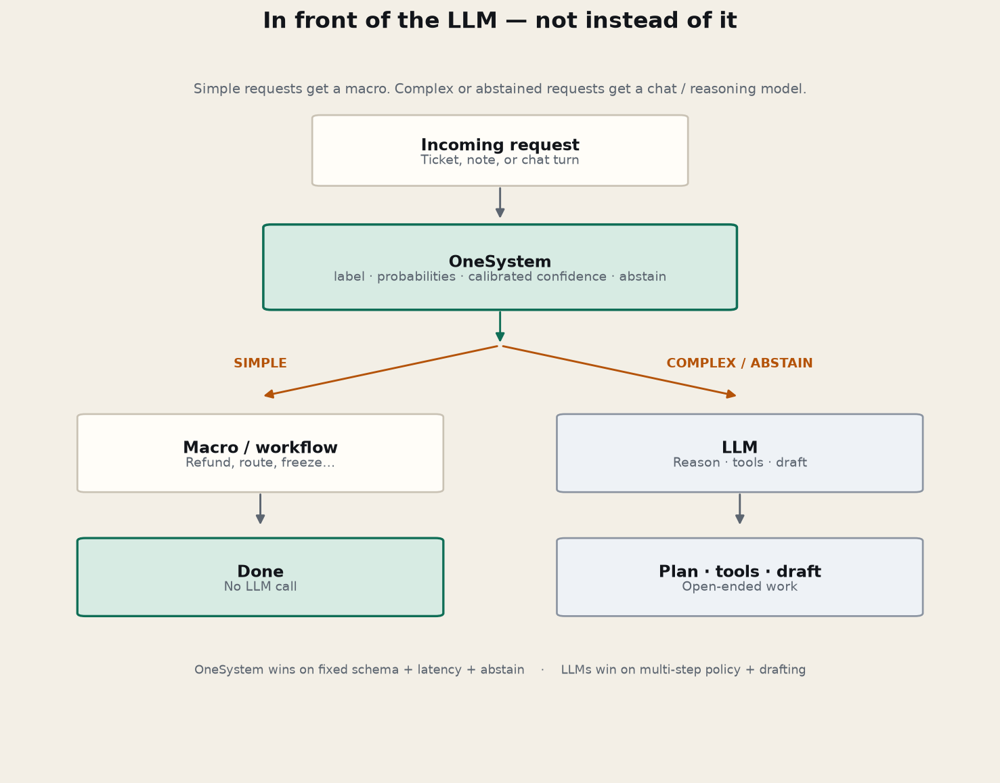
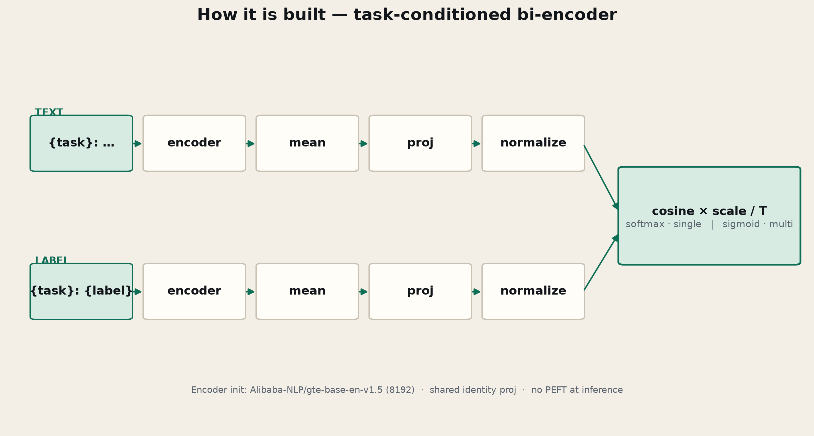

OneSystem wins
Fixed schema, low latency, native probabilities, enterprise routing, human-abstain without prompt hacks.
OneSystem
A System‑1 decision engine for LLM pipelines. Route, filter, and abstain in one forward pass — then call a chat or reasoning model only when the request is complex. Not a chat model.
Simple requests get a macro. Complex or abstained requests get a chat / reasoning model.

Fixed schema, low latency, native probabilities, enterprise routing, human-abstain without prompt hacks.
Multi-step policy, memory, tool calls, drafting email — “check eligibility and write the appeal.” Don’t force that through a classifier.
Hard numbers from OneSystem v0.3.0 config.json. Longer strings are truncated (start kept, tail dropped).
Includes "{task}: {text}". About 6k–7k English words / ~30–40k characters. Backbone is GTE-base (8k). Short tickets still pad only to the batch max — you only pay 8k when the document is long.
Includes task prefix and description. Prefer short names; keep descriptions under ~80–100 words or they truncate.
Minimum two candidates. Training data used small sets (often 2–16). Large vague label dumps hurt accuracy; labels are cached after the first encode.
Trained on English development data. Latency ballpark after warmup: ~10–40 ms/task on GPU/MPS, ~50–150 ms/task on CPU. Download ~420 MB once.
Every call is classification over a candidate set you define.
"intent": ["refund", "other"]
Returns label, confidence, probabilities.
multi_label: True + threshold
Returns a list of labels above the threshold.
Labels like 0..3
Adds expected score for severity / urgency scales.
min_confidence=0.6
Weak heads return label: null and abstain: true.
git clone https://github.com/kiranbeethoju/onesystem.git
cd onesystem
pip install -e .
from onesystem.model import OneSystem
model = OneSystem.load() # general v0.3.0 — downloads release weights if needed
Pick the general release for mixed schemas, or a domain checkpoint after you run the matching
benchmarks/run_*.py (weights land under models/).
Path argument to OneSystem.load(...) is the only config change.
General release
OneSystem.load() # or OneSystem.load("models/onesystem")
Banking intents
OneSystem.load("models/onesystem-banking77")
Assistant intents + OOS
OneSystem.load("models/onesystem-clinc150")
Home / voice intents
OneSystem.load("models/onesystem-hwu64")
Emotions (multi-label)
OneSystem.load("models/onesystem-goemotions")
Inference
from onesystem.model import OneSystem
# --- pick one ---
MODELS = {
"general": "models/onesystem", # or None → release download
"banking77": "models/onesystem-banking77", # after: python benchmarks/run_banking77.py
"clinc150": "models/onesystem-clinc150", # after: python benchmarks/run_clinc150.py
"hwu64": "models/onesystem-hwu64", # after: python benchmarks/run_hwu64.py
"goemotions":"models/onesystem-goemotions", # after: python benchmarks/run_goemotions.py
}
domain = "banking77" # change me
model = OneSystem.load(MODELS[domain]) # use None for general release
# Banking / CLINC / HWU — single-label intent
if domain in {"banking77", "clinc150", "hwu64"}:
labels = ["…"] # full frozen label list for that dataset
out = model.classify(
"I want to transfer money to my savings account",
{"intent": labels},
min_confidence=0.6, # abstain → call LLM (see below)
)
# GoEmotions — multi-label
if domain == "goemotions":
emotions = [
"admiration", "amusement", "anger", "annoyance", "approval", "caring",
"confusion", "curiosity", "desire", "disappointment", "disapproval",
"disgust", "embarrassment", "excitement", "fear", "gratitude", "grief",
"joy", "love", "nervousness", "optimism", "pride", "realization",
"relief", "remorse", "sadness", "surprise",
]
out = model.classify(
"I'm so grateful this finally worked!",
{"emotion": {"labels": emotions, "multi_label": True, "threshold": 0.3}},
)Train domain weights (once):
python benchmarks/run_banking77.py --epochs 4
python benchmarks/run_clinc150.py --epochs 3
python benchmarks/run_hwu64.py --epochs 4
python benchmarks/run_goemotions.py --epochs 2
Your own taxonomy:
python -m onesystem.domain_adapt --train data/mine.jsonl \
--output models/onesystem-mydomain --name OneSystem-MyDomainAbstain, exception, or a “complex” label should hit a chat / reasoning API. OneSystem never drafts text; your LLM does. Works with any OpenAI-compatible endpoint.
Production pattern
import json
import os
import urllib.request
from onesystem.model import OneSystem
model = OneSystem.load("models/onesystem-banking77") # or general / other domain
LLM_URL = os.environ.get("LLM_API_URL", "https://api.openai.com/v1/chat/completions")
LLM_KEY = os.environ["LLM_API_KEY"]
LLM_MODEL = os.environ.get("LLM_MODEL", "gpt-4o-mini")
def call_llm(user_text: str, reason: str) -> str:
"""Custom LLM API — swap URL/headers for Azure, vLLM, Groq, etc."""
body = {
"model": LLM_MODEL,
"messages": [
{
"role": "system",
"content": (
"You handle requests OneSystem could not resolve safely. "
f"Reason: {reason}. Be concise; use tools if your stack provides them."
),
},
{"role": "user", "content": user_text},
],
"temperature": 0.2,
}
req = urllib.request.Request(
LLM_URL,
data=json.dumps(body).encode(),
headers={
"Authorization": f"Bearer {LLM_KEY}",
"Content-Type": "application/json",
},
method="POST",
)
with urllib.request.urlopen(req, timeout=60) as resp:
payload = json.loads(resp.read().decode())
return payload["choices"][0]["message"]["content"]
def handle(text: str, labels: list[str]) -> dict:
try:
d = model.classify(text, {"intent": labels}, min_confidence=0.65)
intent = d["intent"]
except Exception as exc:
# model crash / OOM / bad input → always escalate
return {"route": "llm", "reason": f"onesystem_error:{exc}", "reply": call_llm(text, str(exc))}
if intent.get("abstain") or intent.get("label") is None:
reply = call_llm(text, "abstain_low_confidence")
return {"route": "llm", "reason": "abstain", "decision": intent, "reply": reply}
label = intent["label"]
if label in {"other", "complex", "escalate"}:
reply = call_llm(text, f"complex_label:{label}")
return {"route": "llm", "reason": label, "decision": intent, "reply": reply}
# Simple — run your deterministic macro (no LLM)
return {"route": "macro", "action": f"macro:{label}", "decision": intent}
# example
result = handle(
"I need a refund and also want you to rewrite our SLA email to legal.",
["refund_request", "order_status", "cancel_subscription", "other"],
)
print(result["route"], result.get("action") or result.get("reason"))Routes
• macro:* — confident simple label → your workflow / API, no LLM cost
• llm — abstain, error, or complex label → LLM_API_URL
Env
export LLM_API_URL=https://api.openai.com/v1/chat/completions
export LLM_API_KEY=sk-…
export LLM_MODEL=gpt-4o-mini
Same pattern works for Azure OpenAI, OpenRouter, local vLLM — only URL + headers change.The public v0.3.0 checkpoint is general-purpose. When you have a fixed label taxonomy, fine-tune a domain checkpoint — that is what lifts BANKING77 / CLINC150 / HWU64 / GoEmotions.
Training
# 1) JSONL row
# {"input":"…","output":{"classifications":[{
# "task":"intent","labels":["refund","status","other"],
# "true_label":["refund"],"multi_label":false}]}}
# 2) Fine-tune
python -m onesystem.domain_adapt \
--train data/my_domain/train.jsonl \
--output models/onesystem-mydomain \
--name OneSystem-MyDomain \
--epochs 4 --batch-size 8
# 3) Load
from onesystem.model import OneSystem
model = OneSystem.load("models/onesystem-mydomain")Tips
• Keep the official test set out of train and calib.
• Short utterances: --max-text-len 512 · long docs: up to 8192.
• Multi-label: "multi_label": true + all gold tags in true_label.
• CLI: onesystem-adapt (same flags).Outputs below were produced on CPU with an earlier build (schemas unchanged in v0.3.0). Clinical examples are not medical advice or a device.
Support
model.classify(
"Stop the bot and get me a person.",
{
"handoff": ["yes", "no"],
"sentiment": ["negative", "neutral", "positive"],
"urgency": ["0", "1", "2", "3"],
},
min_confidence=0.6,
){
"handoff": {
"label": "yes",
"confidence": 0.9823,
"probabilities": {"yes": 0.9823, "no": 0.0177}
},
"sentiment": {
"label": null,
"confidence": 0.5687,
"probabilities": {
"negative": 0.3651,
"neutral": 0.0662,
"positive": 0.5687
},
"abstain": true
},
"urgency": {
"label": null,
"confidence": 0.3615,
"score": 1.5061,
"abstain": true,
"probabilities": {"0": 0.1819, "1": 0.3615, "2": 0.2251, "3": 0.2314}
}
}Handoff is decisive. Sentiment and urgency abstain under the confidence floor — route those to a human or a second model.
E-commerce
model.classify(
"Order #18422 arrived with a cracked phone case. I need a "
"replacement before Friday or a refund to the original card. "
"Tracking said delivered yesterday.",
{
"intent": [
"refund_request", "replacement", "order_status",
"cancel_order", "address_change", "other",
],
"policy_path": {
"labels": {
"damaged_in_transit": "item arrived broken; open replacement or refund",
"change_of_mind": "customer no longer wants the item",
"late_delivery": "SLA miss; goodwill or carrier claim",
"wrong_item": "fulfilled SKU does not match order",
}
},
"urgency": ["0", "1", "2", "3"],
"areas": {
"labels": ["shipping", "product_quality", "payments", "account"],
"multi_label": True,
"threshold": 0.45,
},
},
min_confidence=0.6,
){
"intent": {
"label": "replacement",
"confidence": 0.6003,
"probabilities": {
"refund_request": 0.2438,
"replacement": 0.6003,
"order_status": 0.0396,
"cancel_order": 0.0671,
"address_change": 0.0373,
"other": 0.012
}
},
"policy_path": {
"label": "damaged_in_transit",
"confidence": 0.9282,
"probabilities": {
"damaged_in_transit": 0.9282,
"change_of_mind": 0.0214,
"late_delivery": 0.0365,
"wrong_item": 0.014
}
},
"urgency": {
"label": null,
"confidence": 0.3945,
"score": 1.5084,
"abstain": true
},
"areas": {
"labels": ["shipping", "product_quality", "payments", "account"],
"threshold": 0.45,
"probabilities": {
"shipping": 0.616,
"product_quality": 0.6108,
"payments": 0.7614,
"account": 0.6941
}
}
}Described labels help policy_path land on damaged_in_transit (0.93). Intent prefers replacement over refund. Urgency abstains.
Financial
model.classify(
"I see two $499 charges from ACME MARKET on my debit card "
"this morning. I only bought once. Please reverse the "
"duplicate and freeze the card if needed.",
{
"intent": [
"dispute_charge", "card_freeze", "balance_inquiry",
"transfer_help", "other",
],
"channel_urgency": ["0", "1", "2", "3"],
"fraud_signal": {
"labels": {
"high": "likely unauthorized or duplicate fraud pattern",
"medium": "needs agent review",
"low": "ordinary customer request",
}
},
"products": {
"labels": ["debit_card", "credit_card", "checking", "wire", "mobile_app"],
"multi_label": True,
"threshold": 0.4,
},
},
min_confidence=0.6,
){
"intent": {
"label": "card_freeze",
"confidence": 0.7224,
"probabilities": {
"dispute_charge": 0.113,
"card_freeze": 0.7224,
"balance_inquiry": 0.0714,
"transfer_help": 0.0493,
"other": 0.0438
}
},
"channel_urgency": {
"label": null,
"confidence": 0.3959,
"score": 1.4304,
"abstain": true
},
"fraud_signal": {
"label": null,
"confidence": 0.5,
"abstain": true,
"probabilities": {"high": 0.3925, "medium": 0.1075, "low": 0.5}
},
"products": {
"labels": ["debit_card", "credit_card", "checking", "wire", "mobile_app"],
"threshold": 0.4,
"probabilities": {
"debit_card": 0.9704,
"credit_card": 0.9111,
"checking": 0.512,
"wire": 0.74,
"mobile_app": 0.6498
}
}
}Intent leans card_freeze from “freeze the card”. fraud_signal abstains — a good place to escalate rather than auto-close.
EdTech
model.classify(
"I submitted my calculus homework twice and the gradebook "
"still shows zero. Midterm is tomorrow — can a human check this?",
{
"intent": [
"grade_issue", "content_question", "tech_support",
"deadline_extension", "other",
],
"subject": [
"math", "science", "english", "history",
"computer_science", "other",
],
"needs_human": ["yes", "no"],
"urgency": ["0", "1", "2", "3"],
"topics": {
"labels": ["grading", "lms_bug", "exam_prep", "account_access"],
"multi_label": True,
},
},
min_confidence=0.55,
){
"intent": {
"label": "grade_issue",
"confidence": 0.7595,
"probabilities": {
"grade_issue": 0.7595,
"content_question": 0.0688,
"tech_support": 0.0952,
"deadline_extension": 0.0423,
"other": 0.0342
}
},
"subject": {
"label": "math",
"confidence": 0.8012,
"probabilities": {
"math": 0.8012,
"science": 0.0405,
"english": 0.032,
"history": 0.0071,
"computer_science": 0.1069,
"other": 0.0123
}
},
"needs_human": {
"label": "no",
"confidence": 0.7208,
"probabilities": {"yes": 0.2792, "no": 0.7208}
},
"urgency": {
"label": null,
"confidence": 0.4197,
"score": 1.117,
"abstain": true
},
"topics": {
"labels": ["grading", "lms_bug", "exam_prep", "account_access"],
"threshold": 0.5,
"probabilities": {
"grading": 0.9629,
"lms_bug": 0.8589,
"exam_prep": 0.845,
"account_access": 0.6384
}
}
}grade_issue + math are clear. Binary needs_human can be brittle without described labels — prefer descriptions or a higher-level escalate rule using urgency abstain.
Clinical (schema demo)
Not a medical device. Do not use as the sole basis for diagnosis or treatment.
model.classify(
"52M with sudden crushing chest pain radiating to left arm "
"for 40 minutes, diaphoresis, history of hypertension. "
"BP 168/102, HR 110. No fever.",
{
"acuity": ["0", "1", "2", "3", "4"],
"disposition": {
"labels": {
"ed_now": "send to emergency department immediately",
"urgent_clinic": "same-day clinic or urgent care",
"routine": "non-urgent outpatient follow-up",
"self_care": "home care with return precautions",
}
},
"specialty": [
"cardiology", "pulmonology", "gastroenterology",
"neurology", "primary_care", "other",
],
"red_flags": {
"labels": [
"chest_pain", "shortness_of_breath", "neuro_deficit",
"severe_bleeding", "altered_mental_status",
],
"multi_label": True,
"threshold": 0.45,
},
},
min_confidence=0.55,
){
"acuity": {
"label": null,
"confidence": 0.2632,
"score": 1.7674,
"abstain": true,
"probabilities": {
"0": 0.224, "1": 0.2632, "2": 0.2113,
"3": 0.1242, "4": 0.1772
}
},
"disposition": {
"label": "ed_now",
"confidence": 0.6012,
"probabilities": {
"ed_now": 0.6012,
"urgent_clinic": 0.2443,
"routine": 0.0865,
"self_care": 0.0681
}
},
"specialty": {
"label": "cardiology",
"confidence": 0.608,
"probabilities": {
"cardiology": 0.608,
"pulmonology": 0.1167,
"gastroenterology": 0.0684,
"neurology": 0.0772,
"primary_care": 0.0707,
"other": 0.0589
}
},
"red_flags": {
"labels": [
"chest_pain", "shortness_of_breath", "neuro_deficit",
"severe_bleeding", "altered_mental_status"
],
"threshold": 0.45,
"probabilities": {
"chest_pain": 0.9969,
"shortness_of_breath": 0.8874,
"neuro_deficit": 0.6478,
"severe_bleeding": 0.9086,
"altered_mental_status": 0.732
}
}
}Described ed_now and specialty cardiology fire with moderate confidence. Acuity abstains — the right System‑1 behaviour before a clinician.
Architecture pattern
Full OpenAI-compatible fallback with error handling: When OneSystem abstains or fails.
d = model.classify(
"Hi, we were billed twice for March. Please refund the duplicate today.",
{
"intent": ["refund_request", "order_status", "cancel_subscription", "other"],
"handoff": ["yes", "no"],
},
min_confidence=0.65,
)
if d["handoff"]["label"] == "yes" or d["intent"].get("abstain"):
action = "queue:human_or_llm" # → call_llm(...)
elif d["intent"]["label"] == "order_status":
action = "macro:order_status"
else:
action = "llm:compose_reply" # → call_llm(...){
"intent": {
"label": "refund_request",
"confidence": 0.9625,
"probabilities": {
"refund_request": 0.9625,
"order_status": 0.0043,
"cancel_subscription": 0.0247,
"other": 0.0084
}
},
"handoff": {
"label": "yes",
"confidence": 0.7487,
"probabilities": {"yes": 0.7487, "no": 0.2513}
}
}
# → action = "queue:human_or_llm"Task-conditioned bi-encoder: text and labels share one projection, then scored by scaled cosine.

{task}: {text}
{task}: {label}
Alibaba-NLP/gte-base-en-v1.5 (8192 ctx), then fine-tuned; full weights saved inside OneSystem.fastino/fast-decisions development split — 70% train / 10% calib / 20% eval per domain.